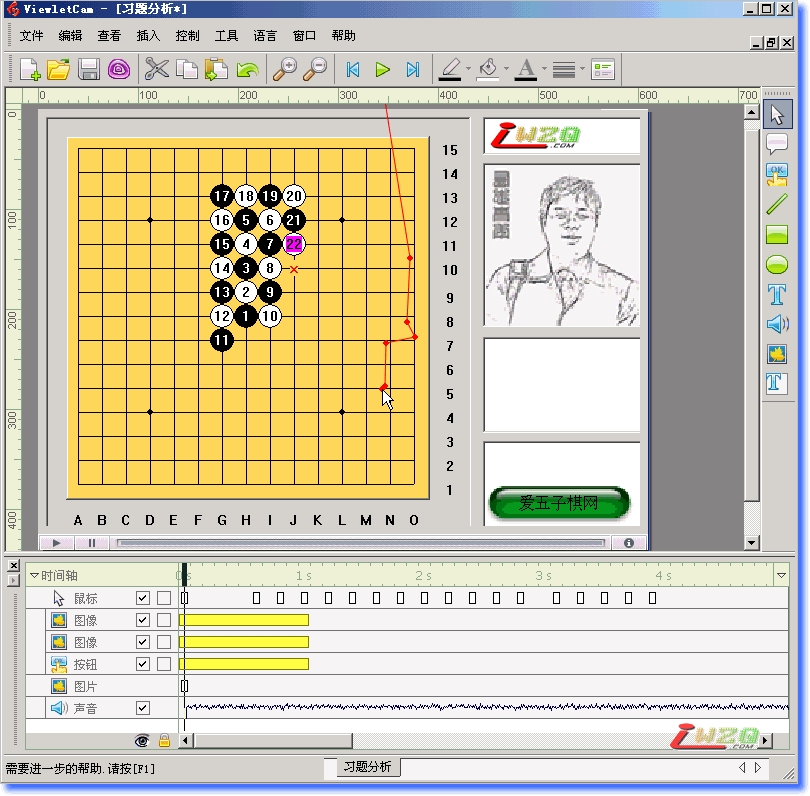

爱五子棋网语音教学录像板块说明及软件使用介绍
#1 爱五子棋网语音教学录像板块说明及软件使用介绍 作者：有志青年 发表时间：2008-11-9 14:52:57
 请点击下载：本文所使用的软件及说明
请点击下载：本文所使用的软件及说明
一、为啥开此版块
爱五子棋网已经有较多的棋评及各种层次的教学文章，还特地开发了在线互动教室，不过这些都是文字方式的，一直有五子棋爱好者提议能否有语音教学，前一段时间在网上搜集相关资料及软件，发现围棋有专门的录制软件，但不能直接用到五子棋中来，仔细做了思考，大体如下：
所谓的语音教学课件，主要由声音和图片组成，其中图片其实就是不断更新的棋谱，而这样的教学课件中声音是主要数据，也是声音决定了课件的大小。只要是语音课件就不能考虑它的大小，也没办法缩减它的大小，否则势必声音效果很差。
如果用专门制作的棋类录制软件，文件的大小不会有明显变化，优点在于可以暂停录像去对应的打谱；缺点在于需要热心的程序员专门为此开发，且需要采用专门的播放软件。
如果采用屏幕录像制作软件，文件的会稍微大一点点，但不会很夸张，优点在于可以保存为swf或者exe这样的通用文件，不需要使用者安装任何软件，而暂停录像去打谱的操作也可以实现（暂停，启动打谱软件打谱）。
二、一些说明
这里要说明的是，这篇文章在于介绍如何制作五子棋教学录像，无论您是哪个家族或是其他网站的管理者，都可以借鉴此文章，并可以制作属于你们自己的教学录像，爱五子棋网只希望通过此文章，能有更多的五子棋教学录像出现，为五子棋爱好者提供充足的资料。
当然，要提醒，此方法做出来的课件1小时大约15-20M左右，贵家族或网站需要准备足够的空间存放。
爱五子棋网将为此专门准备服务器空间。
三、材料准备
1、硬件准备
耳麦，录音输入选择麦克风，录音时的声音输出不要使用喇叭，建议采用耳塞，以避免喇叭的声音进入麦克风。
2、软件准备
a、ViewletCam软件， 见附件，安装不再赘述
b、爱五子棋打谱软件，见附件，不必安装，使用方法参照爱五子棋网说明
3、素材准备
一些想在录像中显示的图片及声音、文字等，自己准备。本说明附件中提供了爱五子棋网的LOGO图，希望能得到您的使用支持，谢谢！当然你可以换成您自己的。
四、录制过程
1、新建一个录像，需要填写的是文件名，注意这个文件名将会新建一个对应的文件夹，具体地址见该图“浏览”按钮前。
2、第二步选择“撷取一个单独的窗口”这样即使你的窗口在录制的过程中移动了，也会跟着走，而不是屏幕上的固定区域。
3、此时将跳出窗口中的圆形光标拖动到你想录制的窗口中，爱五子棋打谱软件有好多小窗口，注意将圆形光标移动在上图中的位置选择整个下方，这样在录制完成后可以添加文字或者插图片，否则只能插在棋盘上了哟。
4、选中“同步录制声音”并在“设定”中选择声音，参照上图设定。开始/停止的快捷键可以自行设置，同样暂停/还原也一样，不再赘述。
5、接着就可以录制了。

6、录制完成后，可以在窗口中添加文字及图片，而且是多张图片都可以的哟。
7、编辑完成后选择导出swf格式
8、最终文件夹中有以上文件，网页是调用对应swf文件的，可以删除；两个声音分别是wav和mp3以及那个漂亮的图标是原文件配套使用的；我们需要的是swf文件。
因为文件较大，你可以发到我的邮箱中 ntcyz@qq.com [qq的大文件发送还是很快的]，我收到您的文件后，会尽快上传到爱五子棋网的服务器中并将对应的地址回信告诉你。
&nbs
#2 Re:本版说明及软件使用介绍 作者：越狱行辕 发表时间：2008-11-9 17:56:06
谢谢#3 Re:本版说明及软件使用介绍 作者：越狱行辕 发表时间：2008-11-9 17:57:10
哈哈内容很搞笑啊呵呵 有志大哥声音挺有磁性哈#4 Re:本版说明及软件使用介绍 作者：梦婷 发表时间：2008-11-9 20:16:25
 有志 真厉害 声音也很有磁性
有志 真厉害 声音也很有磁性
#5 Re:爱五子棋网语音教学录像板块说明及软件使用介绍 作者：红运 发表时间：2008-11-9 23:37:55
 好久没来爱五子网站越来越强悍了
好久没来爱五子网站越来越强悍了
 有志的普通话太正了偶白高兴一场
有志的普通话太正了偶白高兴一场
#6 Re:爱五子棋网语音教学录像板块说明及软件使用介绍 作者：炫飞柳扶风 发表时间：2008-11-10 19:26:45
 终于看见大大对偶提议的应答拉，谢谢谢谢。恩恩很不错，正是偶想要的效果，当然了还没能做到课程文件做成1M以下的那种，不过这个问题，是需要程序高手来解决的呀，盼望中。
终于看见大大对偶提议的应答拉，谢谢谢谢。恩恩很不错，正是偶想要的效果，当然了还没能做到课程文件做成1M以下的那种，不过这个问题，是需要程序高手来解决的呀，盼望中。
有志大大辛苦了。真的好高兴啊，希望能做到围棋语音课程那样好。
［ 有志青年 于 2008-11-10 19:34:30 时奖励此帖[金币加 20 威望加1］
#7 Re:爱五子棋网语音教学录像板块说明及软件使用介绍 作者：基地色狼 发表时间：2008-11-14 23:56:19
不错不错！支持一下哈
#8 Re:爱五子棋网语音教学录像板块说明及软件使用介绍 作者：uniwin 发表时间：2008-11-28 14:55:18
很好，这样就多了一种学习资料的表现形式，谢谢了
#9 Re:爱五子棋网语音教学录像板块说明及软件使用介绍 作者：uniwin 发表时间：2008-11-29 15:44:23
有志您好，我大体看了一下这个软件以及发表出来的几个文件（天羽和吴镝对46届名人战的讲解录像），有点疑问，请解答：
吴镝：瑞星对局欣赏（空间联系概念）.swf播放时间大概是15分钟左右，天羽：46期日本名人战赏析-第二局瑞星.swf播放时间大概是30分钟左右，后者播放时间是前者的2倍。但是就文件体积而言，吴镝的那个是2103k，天羽的那个是26981k，后者差不多是前者的20多倍。为什么会有这么大的差异呢？
之所以问这些，是想尽量取得最小的文件，以方便传播、保存，如能得到您的答复，将不胜感激。
uniwinjz@163.com
#10 Re:爱五子棋网语音教学录像板块说明及软件使用介绍 作者：有志青年 发表时间：2008-11-29 19:37:58
吴镝的那个教学录像不是用这个软件制作的，是用flash硬生生的制作的，用吴老师自己的话说，“累呀”，非常花时间；天羽是用顶楼提供的软件制作的，在录制的时候声音的质量选择的比较高，所以文件比较大。#11 Re:爱五子棋网语音教学录像板块说明及软件使用介绍 作者：uniwin 发表时间：2008-11-29 20:52:21
谢谢有志的答复！感觉天羽那个声音质量确实很好！自己录制一下试试，尽量争取文件小一点。
#12 Re:爱五子棋网语音教学录像板块说明及软件使用介绍 作者：超级菜鸟徒弟 发表时间：2009-2-19 16:01:41
不知道能不能回复了,试一下.
太高兴了,终于可以发表意见了!非常感谢贵站这么贴心的资料,这对我们五子棋爱好者、初学者来说是个天大的福音。